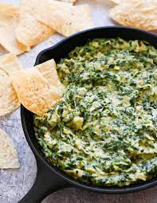
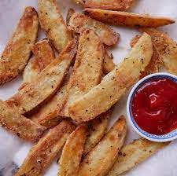
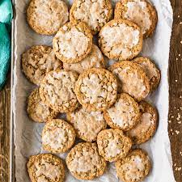

Dolly Dip
Ingredients:
- 8 oz. cream cheese, softened
- 1/4 cup miracle whip
- 1/8 tsp onion powder
- 1/4 tsp garlic powder
- 1 tso of western dressing
- splash of milk
- potato chips
Directions:
Mix all of the ingredients together in a bowl with beaters.
Add a little splash of milk to make it smoother.
Finally, serve with potato chips.
World Famous Spinach Artichoke Dip
Ingredients:
- 16 oz. roasted garlic alfredo sauce
- 8 oz. cream cheese, at room temperature
- 1/2 cup parmesan cheese, shredded
- 1/2 romano cheese, shredded
- 1 can of artichoke hearts
- 10 oz. frozen spinach
- 1/2 cup milk
Directions:
- Put all ingredients into a crockpot and mix well.
- Then cook on low for 2-3 hours or on high for 1 hour. Make sure to stir the dip every 30 minutes.
- Serve with tortilla chips, crackers, or bread.

Buffalo Chicken Dip
Ingredients:
- 1 lbs. of cooked chicken, shredded
- 8 oz. cream cheese, cut into cubes
- 1 cup ranch dressing
- 3/4 cup hot sauce
- 2 cups shredded cheddar cheese
Directions:
- Place all ingredients into a crockpot and stir well.
- Heat on high for an hour (stir every 20 minutes).
- Serve with tortilla chips or crackers.

Air Fryer Garlic Parmesan Fries
Ingredients:
- Potatoes
- Salt & black pepper
- Oil
- Garlic
- Parsley
- Parmesan Cheese
Directions:
Peel and cut potatoes into thin strips.
Coat potato strips in oil, salt, pepper, garlic, parsley, and parmesan cheese.
Once fully coated play the fries into the air fryer.
Cook until cripsy.

Oven Baked Steak Fries
Ingredients:
- 1 lbs. russet potatoes
- 1 tbsp cooking oil
- 1/2 tbsp paprika
- 1/2 tbsp steak seasoning
Directions:
- Preheat the oven to 425 degrees. Wash the potatoes, cut each potato into wedges, approximately 12 wedges per potato.
- Add the potato wedges to a bowl with the cooking oil, paprika, and steak seasoning. Toss the potato wedges until they are well coated.
- Spread the seasoned potato wedges out over a parchment-lined baking sheet, making sure they are in a single layer. Transfer to the preheated oven and bake for 35 minutes, or until they are well browned and crispy. Flip the steak fries after 20 minutes of baking.

The Best Chocolate Chip Cookies
Ingredients:
- 2 eggs
- 1 cup brown sugar
- 1 cup white sugar
- 1/2 cup shortening
- 1/2 cup margarine
- 1 tsp salt
- 1 tsp baking soda
- 2 1/2 cups all-purpose flour
- 1 tsp vanilla
- one bag of semi-sweet chocolate chunks
Directions:
Cream together eggs, brown sugar, shortening, and margarine.
Add in salt, baking soda, flour, and vanilla.
Fold in chocolate chunks.
Bake in the oven at 350 degrees for 12-15 minutes, let cool before serving.
Old Fashion Iced Oatmeal Cookies
Cookie Ingredients:
- 3/4 cup shortening
- 1 cup packed brown sugar
- 1/2 cup packed brown sugar
- 1/2 cup sugar
- 1/4 cup water
- 1 tsp vanilla extract
- 1 cup all-purpose flour
- 1 tsp baking soda
- 1/4 tsp salt
- 1/4 tsp nutmeg
- 3/4 tsp cinnamon
- 2 cups oats
Glaze Ingredients:
- 4 tbsp milk
- 2 cups powdered sugar sifted
- water as needed
Directions:
- In a large mixing bowl, cream shortening and sugar until light and fluffy.
- Beat in water and vanilla.
- Combine the flour, baking soda, salt, nutmeg, and cinnamon in another bowl and gradually add to the creamed mixture and mix well.
- Fold in oats.
- Drop dough onto greased baking sheets using a medium cookie scoop.
- Bake at 350 degrees for 10-12 minutes or until golden brown. Allow cookies to stand for 2 minutes before removing to a wire rack to cool.
- While the cookies are cooking, make a batch of glaze. Stir milk and powdered sugar together. Add 1 tsp water.
- Quickly dip the top of each cookie in the glaze.
- Allow excess to drip off.
